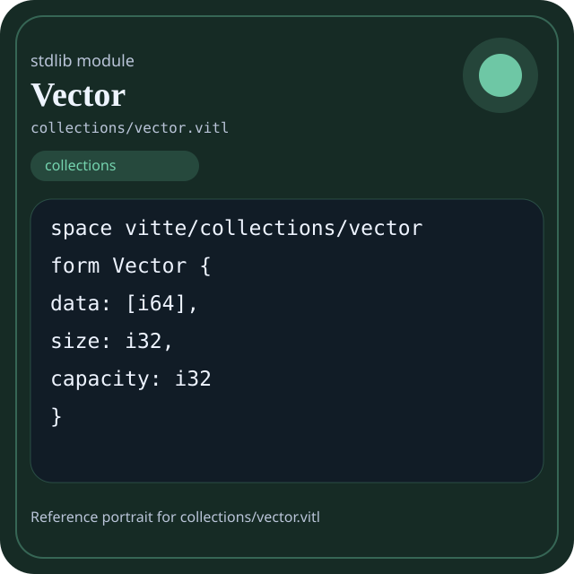

Stdlib module collections/vector.vitl
This page is a wiki-style reference for one concrete stdlib file. It explains what the file owns, where it fits in the family, and how to decide whether this is the right surface to depend on.

collections/vector.vitl.Family: collections
Kind: public stdlib surface
Page style: this reference follows the same “encyclopedic card + portrait + usage contract” logic as the keyword pages, but for stdlib modules.
Summary
- Overview
- Purpose
- Taxonomy
- Implementation profile
- Top-level API inventory
- Position in family
- Declaration map
- Representative signatures
- How to use this module
- User example
- Keyword coverage
- Source shape
- Source landmarks
- Source organization
- Complete API catalog
- Integration boundaries
- Composition guidance
- Relationship table
- Neighbor modules
Overview
| Field | Value |
|---|---|
| Path | collections/vector.vitl |
| Family | collections |
| Kind | public stdlib surface |
| Line count | 383 |
| Declared procedures | 30 |
| Declared forms/picks | 1 |
`collections/vector.vitl` is a public stdlib surface inside the `collections` family. It should be read as one focused slice of the broader family responsibility: Container and traversal surfaces such as vector, deque, queue, stack, linked list, hashmap, hashset, graph, and matrix.
Purpose
This file should be chosen because of responsibility, not because its name “sounds close enough”. Inside the collections family, it carries one focused part of the contract and keeps that responsibility separate from neighboring concerns.
- Use this module when ordered storage and traversal cost are more important than host-facing effects.
- A build report groups diagnostics in a vector and indexes them in a hashmap.
- A scheduler stores pending work in a queue or deque.
- A graph or matrix page should explain why those shapes exist, not just list filenames.
Taxonomy
Think of this page as a generated encyclopedia entry rather than a hand-written tutorial. The goal is to show what kind of module this is, how dense it is, and what reading strategy makes sense before depending on it.
- Large algorithm surface: this file exposes many procedures and likely acts as a domain toolkit rather than a single thin wrapper.
- Owns domain vocabulary: the module declares data shapes in addition to executable helpers, so its types are part of the contract.
- Minimal top-level dependencies: the module reads as mostly self-contained from its opening declarations.
- Explicit export surface: the file ends with visible export declarations instead of relying only on implicit namespace discovery.
Implementation profile
This profile is inferred directly from the source text. It does not replace reading the file, but it tells you quickly whether the module is mostly declarative, loop-heavy, branch-heavy, or organized around many small exits.
| Signal | Count | What it suggests |
|---|---|---|
if | 21 | Branching density and local decision-making. |
while | 15 | Loop-heavy or iterative implementation style. |
for | 0 | Collection-style traversal at source level. |
match | 0 | Variant-driven branching or grammar-style decoding. |
let | 33 | Local state and intermediate value density. |
give | 32 | Number of explicit exit points and result shaping. |
Top-level API inventory
| Surface | Items |
|---|---|
| Procedures | _repeat_i64, vector_new, _vector_resize, _vector_shrink, vector_push, vector_push_unchecked, vector_insert, vector_pop, vector_remove_at, vector_at, vector_get_unchecked, vector_set |
| Forms | Vector |
| Picks | none declared at top level |
| Constants | none declared at top level |
| Exports | * |
Imported surfaces
This file does not advertise a top-level `use` surface in its opening declarations. That often means it is either self-contained or an aggregation layer.
Position in family
This file is module 11 of 11 in the collections family when ordered by path. By procedure count it ranks 4, and by line count it ranks 2. Those ranks are useful as rough signals of breadth, not as quality judgments.
Declaration map
The declaration map turns raw source into a scan-friendly catalog. It is useful when the file is large enough that a reader wants to orient by kinds of surfaces first.
| Line | Name | Kind | Role |
|---|---|---|---|
| 1 | vitte/collections/vector | space | Declares the namespace that anchors this file in the stdlib tree. |
| 11 | Vector | form | Introduces a structured data shape that other procedures can exchange. |
| 17 | _repeat_i64 | proc | Represents one top-level surface in the file contract and should be read as part of the module boundary. |
| 31 | vector_new | proc | Owns a concrete data shape or the operations that maintain it. |
| 48 | _vector_resize | proc | Owns a concrete data shape or the operations that maintain it. |
| 63 | _vector_shrink | proc | Owns a concrete data shape or the operations that maintain it. |
| 83 | vector_push | proc | Owns a concrete data shape or the operations that maintain it. |
| 94 | vector_push_unchecked | proc | Owns a concrete data shape or the operations that maintain it. |
| 99 | vector_insert | proc | Owns a concrete data shape or the operations that maintain it. |
| 120 | vector_pop | proc | Owns a concrete data shape or the operations that maintain it. |
| 134 | vector_remove_at | proc | Owns a concrete data shape or the operations that maintain it. |
| 159 | vector_at | proc | Owns a concrete data shape or the operations that maintain it. |
| 166 | vector_get_unchecked | proc | Owns a concrete data shape or the operations that maintain it. |
| 170 | vector_set | proc | Owns a concrete data shape or the operations that maintain it. |
| 179 | vector_swap | proc | Owns a concrete data shape or the operations that maintain it. |
| 185 | vector_reverse | proc | Owns a concrete data shape or the operations that maintain it. |
| 200 | vector_reserve | proc | Owns a concrete data shape or the operations that maintain it. |
| 217 | vector_clear | proc | Owns a concrete data shape or the operations that maintain it. |
| 225 | vector_push_many | proc | Owns a concrete data shape or the operations that maintain it. |
| 240 | vector_extend | proc | Owns a concrete data shape or the operations that maintain it. |
| 255 | vector_slice | proc | Owns a concrete data shape or the operations that maintain it. |
| 278 | vector_find | proc | Owns a concrete data shape or the operations that maintain it. |
| 289 | vector_equals | proc | Owns a concrete data shape or the operations that maintain it. |
| 305 | vector_truncate | proc | Owns a concrete data shape or the operations that maintain it. |
| 323 | vector_clone | proc | Owns a concrete data shape or the operations that maintain it. |
| 340 | vector_size | proc | Owns a concrete data shape or the operations that maintain it. |
| 344 | vector_capacity | proc | Owns a concrete data shape or the operations that maintain it. |
| 348 | vector_empty | proc | Owns a concrete data shape or the operations that maintain it. |
| 356 | vector_to_array | proc | Owns a concrete data shape or the operations that maintain it. |
| 368 | __len__ | proc | Represents one top-level surface in the file contract and should be read as part of the module boundary. |
| 372 | __getitem__ | proc | Represents one top-level surface in the file contract and should be read as part of the module boundary. |
| 376 | __iter__ | proc | Represents one top-level surface in the file contract and should be read as part of the module boundary. |
The table is exhaustive for top-level declarations of the selected kinds. This file declares 32 matching surfaces.
Representative signatures
These signatures are shown in source order so the page keeps the feel of a reference manual, not just a keyword cloud.
form Vector {(line 11)proc _repeat_i64(value: i64, count: i32) -> [i64] {(line 17)proc vector_new(capacity: i32) -> Vector {(line 31)proc _vector_resize(v: Vector) {(line 48)proc _vector_shrink(v: Vector) {(line 63)proc vector_push(v: Vector, value: i64) -> int {(line 83)proc vector_push_unchecked(v: Vector, value: i64) {(line 94)proc vector_insert(v: Vector, idx: i32, value: i64) -> int {(line 99)proc vector_pop(v: Vector) -> i64 {(line 120)proc vector_remove_at(v: Vector, idx: i32) -> i64 {(line 134)proc vector_at(v: Vector, index: i32) -> i64 {(line 159)proc vector_get_unchecked(v: Vector, index: i32) -> i64 {(line 166)proc vector_set(v: Vector, index: i32, value: i64) -> int {(line 170)proc vector_swap(v: Vector, i: i32, j: i32) {(line 179)proc vector_reverse(v: Vector) {(line 185)proc vector_reserve(v: Vector, new_cap: i32) {(line 200)proc vector_clear(v: Vector) {(line 217)proc vector_push_many(v: Vector, values: [i64]) {(line 225)
The list is intentionally capped here; the source file declares 31 matching signatures in total.
How to use this module
Start by reading the file as an ownership boundary. Ask three questions: what enters this module, what stable types or procedures it exports, and what adjacent module should stay outside of it.
- Read
spaceand top-level imports first so the ownership boundary ofcollections/vector.vitlis explicit. - Read declared forms and picks before algorithms so the data vocabulary is stable in your head.
- Traverse procedures in source order; the early helpers usually explain the naming and numeric conventions used later.
- Use the source landmarks section below as a table of contents when the file is large.
- Only after that compare neighbor modules, because the right boundary choice matters more than memorizing one helper name.
User example
This example is generated from the actual stdlib module surface. Its job is not to be the smallest snippet possible; its job is to show a realistic consumer-shaped file that exercises the module and mirrors the language keywords the module itself relies on.
space demo/collections_vector
form UserReport {
label: string,
ready: bool
}
proc run_example() -> UserReport {
let entries = _repeat_i64(1, 1)
let ready: bool = _repeat_i64(1, 1)
let stable: bool = ready and true
let fallback: bool = ready or false
let idx: int = 0
let count: int = 0
while idx < entries.len {
set count = count + 1
set idx = idx + 1
}
if ready {
give UserReport { label: "not-ready", ready: false }
} else {
give UserReport { label: "ok", ready: ready }
}
let copies: f64 = 1 as f64
}
export run_exampleKeyword coverage
This table makes the “all keywords of the module” requirement auditable. It compares the detected Vitte keywords in the source file with the generated consumer example above.
| Keyword | Present in module source | Used in generated user example |
|---|---|---|
space | yes | yes |
form | yes | yes |
proc | yes | yes |
let | yes | yes |
set | yes | yes |
if | yes | yes |
else | yes | yes |
while | yes | yes |
give | yes | yes |
export | yes | yes |
and | yes | yes |
or | yes | yes |
as | yes | yes |
The generated snippet exercises every detected Vitte keyword used by this module.
Source shape
space vitte/collections/vector
form Vector {
data: [i64],
size: i32,
capacity: i32
}
proc _repeat_i64(value: i64, count: i32) -> [i64] {
let out: [i64] = []
let i: i32 = 0
while i < count {The excerpt is not meant to replace the file. It exists to make the module recognizable at first glance, the same way a Wikipedia infobox helps the reader orient before reading the whole article.
Source landmarks
Large files are easier to retain when they have visible landmarks. When the source contains explicit section banners, they are surfaced here; otherwise the first major declarations are used as anchors.
- Vector — ULTRA MAX (runtime-grade dynamic array) / O(1) amortized push / dynamic resize + shrink / bulk operations / zero-copy friendly design
- Constructors
- Internal resize / shrink
- Core operations
- Access
- Capacity management
- Bulk operations
- Utilities
- End module
Source organization
When a file carries its own internal chaptering, those chapters usually reveal the intended reading order better than a flat symbol list. This section reconstructs that organization from the source itself.
Opening declarations
Top-level items: 1. Procedures: 0. Data surfaces: 0. Constants: 0.
First visible names: vitte/collections/vector
Vector — ULTRA MAX (runtime-grade dynamic array) / O(1) amortized push / dynamic resize + shrink / bulk operations / zero-copy friendly design
Top-level items: 2. Procedures: 1. Data surfaces: 1. Constants: 0.
First visible names: Vector, _repeat_i64
Constructors
Top-level items: 1. Procedures: 1. Data surfaces: 0. Constants: 0.
First visible names: vector_new
Internal resize / shrink
Top-level items: 2. Procedures: 2. Data surfaces: 0. Constants: 0.
First visible names: _vector_resize, _vector_shrink
Core operations
Top-level items: 5. Procedures: 5. Data surfaces: 0. Constants: 0.
First visible names: vector_push, vector_push_unchecked, vector_insert, vector_pop, vector_remove_at
Access
Top-level items: 5. Procedures: 5. Data surfaces: 0. Constants: 0.
First visible names: vector_at, vector_get_unchecked, vector_set, vector_swap, vector_reverse
Capacity management
Top-level items: 2. Procedures: 2. Data surfaces: 0. Constants: 0.
First visible names: vector_reserve, vector_clear
Bulk operations
Top-level items: 7. Procedures: 7. Data surfaces: 0. Constants: 0.
First visible names: vector_push_many, vector_extend, vector_slice, vector_find, vector_equals, vector_truncate, vector_clone
Utilities
Top-level items: 7. Procedures: 7. Data surfaces: 0. Constants: 0.
First visible names: vector_size, vector_capacity, vector_empty, vector_to_array, __len__, __getitem__, __iter__
End module
Top-level items: 1. Procedures: 0. Data surfaces: 0. Constants: 0.
First visible names: *
Complete API catalog
This catalog is the exhaustive file-level index for the module. It is intentionally closer to a generated encyclopedia appendix than to a tutorial summary.
Data surfaces
| Line | Name | Signature | Role |
|---|---|---|---|
| 11 | Vector | form Vector { | Introduces a structured data shape that other procedures can exchange. |
Procedures
| Line | Name | Signature | Role |
|---|---|---|---|
| 17 | _repeat_i64 | proc _repeat_i64(value: i64, count: i32) -> [i64] { | Represents one top-level surface in the file contract and should be read as part of the module boundary. |
| 31 | vector_new | proc vector_new(capacity: i32) -> Vector { | Owns a concrete data shape or the operations that maintain it. |
| 48 | _vector_resize | proc _vector_resize(v: Vector) { | Owns a concrete data shape or the operations that maintain it. |
| 63 | _vector_shrink | proc _vector_shrink(v: Vector) { | Owns a concrete data shape or the operations that maintain it. |
| 83 | vector_push | proc vector_push(v: Vector, value: i64) -> int { | Owns a concrete data shape or the operations that maintain it. |
| 94 | vector_push_unchecked | proc vector_push_unchecked(v: Vector, value: i64) { | Owns a concrete data shape or the operations that maintain it. |
| 99 | vector_insert | proc vector_insert(v: Vector, idx: i32, value: i64) -> int { | Owns a concrete data shape or the operations that maintain it. |
| 120 | vector_pop | proc vector_pop(v: Vector) -> i64 { | Owns a concrete data shape or the operations that maintain it. |
| 134 | vector_remove_at | proc vector_remove_at(v: Vector, idx: i32) -> i64 { | Owns a concrete data shape or the operations that maintain it. |
| 159 | vector_at | proc vector_at(v: Vector, index: i32) -> i64 { | Owns a concrete data shape or the operations that maintain it. |
| 166 | vector_get_unchecked | proc vector_get_unchecked(v: Vector, index: i32) -> i64 { | Owns a concrete data shape or the operations that maintain it. |
| 170 | vector_set | proc vector_set(v: Vector, index: i32, value: i64) -> int { | Owns a concrete data shape or the operations that maintain it. |
| 179 | vector_swap | proc vector_swap(v: Vector, i: i32, j: i32) { | Owns a concrete data shape or the operations that maintain it. |
| 185 | vector_reverse | proc vector_reverse(v: Vector) { | Owns a concrete data shape or the operations that maintain it. |
| 200 | vector_reserve | proc vector_reserve(v: Vector, new_cap: i32) { | Owns a concrete data shape or the operations that maintain it. |
| 217 | vector_clear | proc vector_clear(v: Vector) { | Owns a concrete data shape or the operations that maintain it. |
| 225 | vector_push_many | proc vector_push_many(v: Vector, values: [i64]) { | Owns a concrete data shape or the operations that maintain it. |
| 240 | vector_extend | proc vector_extend(v: Vector, other: Vector) { | Owns a concrete data shape or the operations that maintain it. |
| 255 | vector_slice | proc vector_slice(v: Vector, start: i32, end: i32) -> [i64] { | Owns a concrete data shape or the operations that maintain it. |
| 278 | vector_find | proc vector_find(v: Vector, value: i64) -> i32 { | Owns a concrete data shape or the operations that maintain it. |
| 289 | vector_equals | proc vector_equals(a: Vector, b: Vector) -> int { | Owns a concrete data shape or the operations that maintain it. |
| 305 | vector_truncate | proc vector_truncate(v: Vector, n: i32) { | Owns a concrete data shape or the operations that maintain it. |
| 323 | vector_clone | proc vector_clone(v: Vector) -> Vector { | Owns a concrete data shape or the operations that maintain it. |
| 340 | vector_size | proc vector_size(v: Vector) -> i32 { | Owns a concrete data shape or the operations that maintain it. |
| 344 | vector_capacity | proc vector_capacity(v: Vector) -> i32 { | Owns a concrete data shape or the operations that maintain it. |
| 348 | vector_empty | proc vector_empty(v: Vector) -> int { | Owns a concrete data shape or the operations that maintain it. |
| 356 | vector_to_array | proc vector_to_array(v: Vector) -> [i64] { | Owns a concrete data shape or the operations that maintain it. |
| 368 | __len__ | proc __len__(v: Vector) -> int { | Represents one top-level surface in the file contract and should be read as part of the module boundary. |
| 372 | __getitem__ | proc __getitem__(v: Vector, index: i64) -> i64 { | Represents one top-level surface in the file contract and should be read as part of the module boundary. |
| 376 | __iter__ | proc __iter__(v: Vector) -> [i64] { | Represents one top-level surface in the file contract and should be read as part of the module boundary. |
Exports
| Line | Name | Signature | Role |
|---|---|---|---|
| 383 | * | export * | Re-exports surfaces that the module wants to expose as part of its public boundary. |
Integration boundaries
Within collections, this file should remain focused. If a future helper changes the host boundary, scheduling boundary, or data-shape boundary, it probably belongs in a neighbor module instead of being added here by convenience.
- Family responsibility: Container and traversal surfaces such as vector, deque, queue, stack, linked list, hashmap, hashset, graph, and matrix.
- Family architecture role: Use `collections` when the shape of data matters more than the host system. This family owns grouping, ordering, indexing, and traversal concerns.
Composition guidance
Choose this module when
- Choose
collections/vector.vitlwhen the main question is owned by this module rather than by transport, storage, orchestration, or user-interface code. - Use this module when ordered storage and traversal cost are more important than host-facing effects.
- A build report groups diagnostics in a vector and indexes them in a hashmap.
- A scheduler stores pending work in a queue or deque.
- A graph or matrix page should explain why those shapes exist, not just list filenames.
Pause before extending it when
- Avoid extending this file when the new helper mostly changes the boundary to host I/O, runtime coordination, or foreign integration instead of staying inside
collections. - Check nearby modules such as
collections/collections.vitl,collections/deque.vitl,collections/graph.vitlbefore adding convenience wrappers here.
Relationship table
This table keeps the page closer to a real encyclopedia entry: a module is easier to understand when compared with its nearest alternatives in the same family.
| Neighbor | Procedures | Data surfaces | Why compare it |
|---|---|---|---|
collections/collections.vitl | 32 | 0 | Shares the same family boundary but carries a distinct slice of responsibility. |
collections/deque.vitl | 10 | 0 | Shares the same family boundary but carries a distinct slice of responsibility. |
collections/graph.vitl | 11 | 0 | Shares the same family boundary but carries a distinct slice of responsibility. |
collections/hashmap.vitl | 18 | 2 | Shares the same family boundary but carries a distinct slice of responsibility. |
collections/hashset.vitl | 16 | 1 | Shares the same family boundary but carries a distinct slice of responsibility. |
collections/linkedlist.vitl | 13 | 2 | Shares the same family boundary but carries a distinct slice of responsibility. |
collections/matrix.vitl | 8 | 0 | Shares the same family boundary but carries a distinct slice of responsibility. |
collections/queue.vitl | 20 | 1 | Shares the same family boundary but carries a distinct slice of responsibility. |